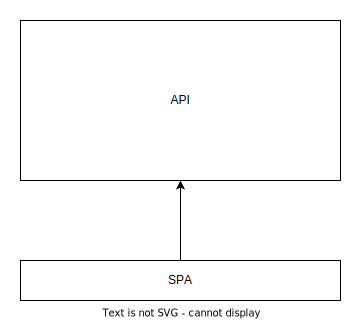
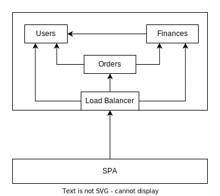
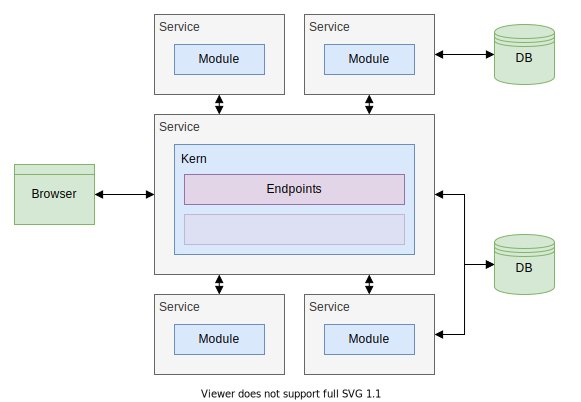
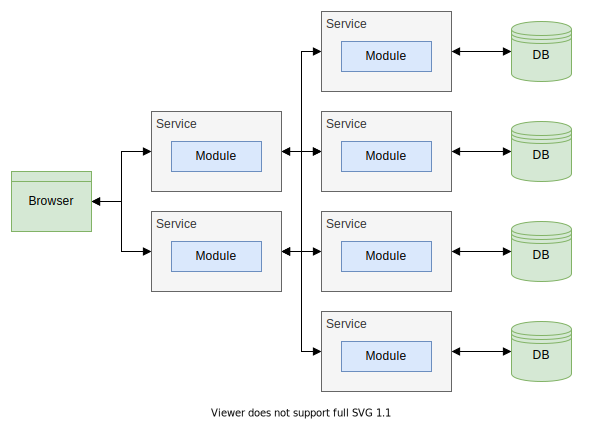
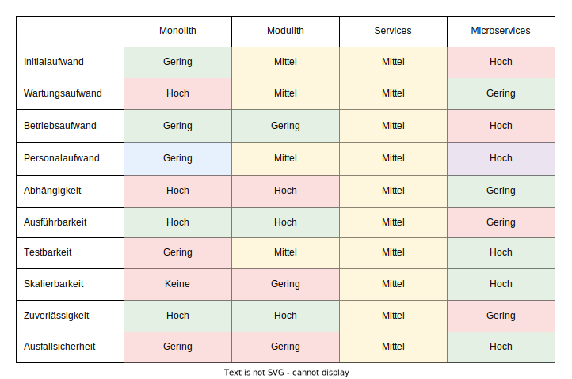

Rich Client: Server
### Wiederholung
#### Verantwortlichkeiten - JSF
- View-Management
- State-Management
- Rendering
- Events
- Routing
- Validation
- Data-Management
- Persistence
#### Verantwortlichkeiten - Rich Client
- View-Management
- State-Management
- Rendering
- Events
- Routing
- Ensurance
#### Verantwortlichkeiten - Webservice
- Validation
- Data-Management
- Persistence
### Webservice
#### Webservice
Drei grundlegende Eigenschaften:
- Stateless
- Scalable
- Untrusting
#### Webservice - Stateless
- Kein Zustand
- Keine Session
- Anfrage ausschließlich mit fachlichen Informationen
#### Webservice - Stateless
- Keine nicht-persistenten Informationen
- Transparentes Caching ausgenommen
- Persistierung in Datenbank oder Dateisystem
- Transparente Datenbank oder Dateisystem
#### Webservice - Scalable
- Abhängig von ausschließlich externen Informationen
- Eingaben des Clients
- Daten der Persistence
- Instanzen sind identitätslos
- Dynamisches hoch-/runterfahren von Instanzen
#### Webservice - Untrusting
- Validierung aller Eingaben
- Isolierung aller Eingaben
- Durchgehende Prüfung der Authorisierung
### Architekturen
Architekturen
Architekturen

#### Architekturen
- Aufteilung von Verantwortlichkeiten
- Abgrenzung einzelner Komponenten
- Interaktion zwischen Komponenten
#### Architekturen
- Architektur bedingt API
- API bedingt nicht die Architektur
#### Architekturen
- Monolith
- Modulith
- Services
- Microservice
Architekturen - Monolith

#### Architekturen - Monolith
- Alle Aspekte der Anwendung in einem Projekt
- Keine Trennung zwischen Fachlichkeiten
- Keine externen Abhängigkeiten zur Laufzeit
Architekturen - Modulith

#### Architekturen - Modulith
- Unterteilung der Anwendung in Fachlichkeiten
- Auslagerung der Fachlichkeiten in Module
- Module definieren öffentliche Schnittstellen
- Auslagerung in Form von Package, Modul, Projekt
- Keine Auslagerung zur Laufzeit
- Zusammengeführt durch Kern
Architekturen - Services

#### Architekturen - Services
- Modulith als Kern
- Auslagerung einzelner Module in Services
- Services haben eigene Datenhaltung
Architekturen - Microservices

#### Architekturen - Microservices
- Auslagerung jedes Modules in Services
- Expliziter Kern durch implizite Abhängigkeiten zwischen Services ersetzt
- Services replizieren Daten in eigener Datenhaltung
### Vergleich
#### Vergleich - Kriterien
- Initialaufwand
- Wartungsaufwand
- Betriebsaufwand
- Personalaufwand
#### Vergleich - Kriterien
- Abhängigkeit
- Ausführbarkeit
- Testbarkeit
- Skalierbarkeit
- Zuverlässigkeit
- Ausfallsicherheit
#### Vergleich - Initialaufwand
- Aufsetzten der Architektur
#### Vergleich - Initialaufwand
Monolith | Modulith | Services | Microservices
----------|-----------|----------|--------------
Gering | Mittel | Mittel | Hoch
#### Vergleich - Wartungsaufwand
- Einführung neuer Features
- Entfernung alter Features
- Behebung von Fehler
- Aktualisierung der Abhängigkeiten
- Refactoring
#### Vergleich - Wartungsaufwand
Monolith | Modulith | Services | Microservices
---------|----------|----------|--------------
Hoch | Mittel | Mittel | Gering
#### Vergleich - Betriebsaufwand
- Betreiben der Services
- Instandhaltung der Umgebung
- Behebung von Störungen
#### Vergleich - Betriebsaufwand
Monolith | Modulith | Services | Microservices
---------|----------|----------|--------------
Gering | Gering | Mittel | Hoch
#### Vergleich - Personalaufwand
- Teamgröße sowie Teamanzahl
- Erhöhte Komplexität erfordert mehr Personal
- Mehr Personal erfordert erhöhte Flexibilität
#### Vergleich - Personalaufwand
Monolith | Modulith | Services | Microservices
---------|----------|----------|--------------
Gering | Mittel | Mittel | Hoch
#### Vergleich - Abhängigkeit
- Trennung der Fachlichkeiten
- Freiheit der Technologien
#### Vergleich - Abhängigkeit
Monolith | Modulith | Services | Microservices
---------|----------|----------|--------------
Hoch | Hoch | Mittel | Gering
#### Vergleich - Ausführbarkeit
- Ausprobieren neuer Features
- Nachstellen von Fehler
- Aufsetzen der Umgebung
#### Vergleich - Ausführbarkeit
Monolith | Modulith | Services | Microservices
---------|----------|----------|--------------
Hoch | Hoch | Mittel | Gering
#### Vergleich - Testbarkeit
- Validierung der Korrektheit
- Absichern von Entwicklungen
#### Vergleich - Testbarkeit
Monolith | Modulith | Services | Microservices
---------|----------|----------|--------------
Gering | Mittel | Mittel | Hoch
#### Vergleich - Skalierbarkeit
- Reaktionsfähigkeit bei Fluktuationen
- Effiziente Nutzung der Resourcen
#### Vergleich - Skalierbarkeit
Monolith | Modulith | Services | Microservices
---------|----------|----------|--------------
Keine | Gering | Mittel | Hoch
#### Vergleich - Zuverlässigkeit
- Störungsanfälligkeit
- Kommunikationsabbrüche
- Fehlerhafte Zustände
- Netzwerke, Hardware, Software
#### Vergleich - Zuverlässigkeit
Monolith | Modulith | Services | Microservices
---------|----------|----------|--------------
Hoch | Hoch | Mittel | Gering
#### Vergleich - Ausfallsicherheit
- Ausfallsicherheit
- Redundanz
#### Vergleich - Ausfallsicherheit
Monolith | Modulith | Services | Microservices
---------|----------|----------|--------------
Gering | Gering | Mittel | Hoch
Vergleich - Zusammenfassung

#### Vergleich - Anforderungen
| Monolith | Modulith | Services | Microservices |
|----------|----------|----------|---------------|
| Unbekannt - Einfach | Einfach - Umfangreich | Umfangreich - Komplex | Komplex |
#### Vergleich - Teamgröße
| Monolith | Modulith | Services | Microservices |
|----------|----------|----------|---------------|
Klein | Klein - Groß | Mittel - Groß | Groß - Mehrere
#### Vergleich - Fazit
- Anforderungen und Teamgröße limitieren jeweils Architekturmöglichkeiten
- Architektur aus Deckung der Architekturmöglichkeiten wählen
- Teamgröße muss sich mit Anforderungen decken
#### Vergleich - Fazit
- Monolith für unbekannte Projekte
- Modulith für mehr Wartbarkeit
- Services für Skalierbarkeit
- Microservices für Zuverlässigkeit
### Umsetzung
#### Technologien - Webengineering I
- Servlets
- Rohes HTTP
- Erfordert eigene Implementierung
- JSP
- Implementierung von Servlets
- Ausschließlich HTML
#### Technologien - Webengineering II
- JSF
- Implementierung von Servlets
- Quasi ausschließlich HTML
- ?
- Vollständiges HTTP
- Vielseitige Media-Types
- Einfache Bedienung
#### Technologien - Webengineering II
- JSF
- Implementierung von Servlets
- Quasi ausschließlich HTML
- Spring, Quarkus, Micronaut...
- Vollständiges HTTP
- Vielseitige Media-Types
- Einfache Bedienung
### Spring-Boot
#### Spring
- Application Framework
- Dependency-Injection-Container
#### Spring-Boot
- Basiert auf Spring
- Erweitert um Java EE
- Convention-over-Configuration
- Annotation-Base Configuration
- Spring ursprünglich eigentlich XML
#### Spring-Boot - Bootstrap
```java
@SpringBootApplication
public class MySpringApplication {
public static void main(String[] args) {
SpringApplication.run(MySpringApplication.class, args);
}
}
```
#### Schichten
- Frontend
- Middleware
- Backend
#### Spring Schichten - Frontend
- Schnittstelle zur Außenwelt
- Einordnung
- Wird nicht referenziert
- Referenziert Middleware
#### Spring Schichten - Middleware
- Implementiert Businesslogik
- Einordnung
- Wird von Frontend und Middleware referenziert
- Referenziert Backend
#### Spring Schichten - Backend
- Persistence Ebene / andere Services
- Einordnung
- Wird von Middleware referenziert
- Referenziert nichts
### Frontend
#### Frontend
- Implementierung erfolgt durch Controller
- API in ReST, GraphQL usw.
#### Frontend - Controller
```java
@RestController
public class PersonController {
...
}
```
#### Frontend - Methods
GET /persons
```java
@RestController
public class PersonController {
@RequestMapping(
method = RequestMethod.GET,
path = "/persons"
)
public List<Person> getPersons() {
...
}
}
```
#### Frontend - Methods
POST /persons {"firstName": "John", "lastName": "Doe"}
```java
@RestController
@RequestMapping(path = "/persons")
public class PersonController {
@RequestMapping(
method = RequestMethod.POST
)
public void createPerson(@RequestBody Person person) {
...
}
}
```
#### Frontend - Methods
PUT /persons {"firstName": "John", "lastName": "Doe"}
```java
@RestController
@RequestMapping(path = "/persons")
public class PersonController {
@RequestMapping(
method = RequestMethod.PUT
)
public void updatePerson(@RequestBody Person person) {
...
}
}
```
#### Frontend - Methods
DELETE /persons/John%32Doe
```java
@RestController
@RequestMapping(path = "/persons")
public class PersonController {
@RequestMapping(
method = RequestMethod.DELETE,
path = "/{name}"
)
public void deletePerson(@PathVariable String name) {
...
}
}
```
#### Frontend - Methods
Methoden haben Shorthands-Annotations
- `@RequestMapping(method = RequestMethod.GET)`-> `@GetMapping()`
- `@RequestMapping(method = RequestMethod.POST)`-> `@PostMapping()`
- `@RequestMapping(method = RequestMethod.PUT)`-> `@PutMapping()`
- `@RequestMapping(method = RequestMethod.DELETE)`-> `@DeleteMapping()`
#### Frontend - Paths
GET /persons
```java
@RestController
public class PersonController {
@GetMapping(path = "/persons")
public List<Person> getPersons() {
...
}
}
```
#### Frontend - Paths
GET /persons
```java
@RestController
@RequestMapping(path = "/persons")
public class PersonController {
@GetMapping
public List<Person> getPersons() {
...
}
}
```
#### Frontend - Paths
GET /persons/subpath
```java
@RestController
@RequestMapping(path = "/persons")
public class PersonController {
@GetMapping(path = "/subpath")
public String getSomething() {
...
}
}
```
#### Frontend - Path Variables
GET /persons/John%32Doe
```java
@RestController
@RequestMapping(path = "/persons")
public class PersonController {
@GetMapping(path = "/{name}")
public Person getPerson(@PathVariable String name) {
...
}
}
```
#### Frontend - Parameters
GET /persons?firstName=John&lastName=Doe
```java
@RestController
@RequestMapping(path = "/persons")
public class PersonController {
@GetMapping
public Person getPerson(
@RequestParam String firstName,
@RequestParam String lastName
) {
...
}
}
```
#### Frontend - Bodies
PUT /persons {"firstName": "John", "lastName": "Doe"}
```java
@RestController
@RequestMapping(path = "/persons")
public class PersonController {
@PutMapping
public void updatePerson(@RequestBody Person person) {
...
}
}
```
#### Frontend - Media-Types
POST /persons/convert {"firstName": "John", "lastName": "Doe"}
```java
@RestController
@RequestMapping(path = "/persons")
public class PersonController {
@PostMapping(
path = "/convert",
consumes = MediaType.APPLICATION_JSON_VALUE,
produces = MediaType.APPLICATION_XML_VALUE
)
public Person convertPerson(@RequestBody Person person) {
...
}
}
```
#### Frontend - Media-Types
POST /persons/291/document/43006
```java
@RestController
@RequestMapping(path = "/persons")
public class PersonController {
@GetMapping(
path = "/{id}/documents/{documentId}",
produces = MediaType.APPLICATION_OCTET_STREAM_VALUE
)
public byte[] get(
@PathVariable Long id,
@PathVariable Long documentId
) {
...
}
}
```
#### Frontend - Media-Types
- Konvertierung zwischen Java und JSON, XML usw.
- Häufig genutzte Media-Types automatisch unterstützt
- Darunter z.B. auch Text, HTML oder Binär
- Serialisierung kann konfiguriert werden
### Middleware
#### Middleware
- Implementierung erfolgt durch Services
- Teilt die Businesslogik in Fachlichkeiten auf
#### Middleware - Umsetzung
- Empfohlen als Interfaces mit Implementierungen
- Austauschbar
- Konfigurierbar
- **aber** keine Pflicht
#### Middleware - Service Interface
```java
public interface PersonService {
Person getPerson(String name);
}
```
#### Middleware - Service Implementation
```java
@Service
public class PersonServiceImpl implements PersonService {
@Override
public Person getPerson(String name) {
...
}
}
```
#### Middleware - Default Implementation
```java
@Service
@ConditionalOnMissingBean(PersonService.class)
public class DefaultPersonService implements PersonService {
@Override
public Person getPerson(String name) {
...
}
}
```
#### Middleware - Conditional Implementation
```java
@Service
@ConditionalOnProperty("service.dumbMode")
public class DumbModePersonService implements PersonService {
@Override
public Person getPerson(String name) {
...
}
}
```
#### Middleware - Service
```java
@Service
public class DocumentService {
public byte[] getDocument(Person person) {
...
}
}
```
### Backend
#### Backend
- Implementierung erfolgt durch Repositories / Services
- Datenbanken, Dateisystem und anderes Services
#### Backend - JPA Übersicht
- Objekt-Relationales-Mapping
- Entities
- Abbildungen von Objekten auf Tabellen
- Transaktionsmanagement
- Aggregation von zusammengehörigen Änderungen
- Gewährleistung von Datenintegrität
#### Backend - JPA Entities
- `@Entity` zur Deklaration eine Entity
- `@Id` zur Markierung des ID-Feldes
- `@GeneratedValue` zur automatischen Generierung
- usw.
#### Backend - JPA Repository
```java
@Repository
public interface PersonRepository
extends JpaRepository<Person, Long> {
...
}
```
#### Backend - JPA Repository
- Implementiert Datenbankschnittstelle für eine Entity
- Verschiedene Arten von Datenbankschnittstelle möglich (JPA, ElasticSearch etc.)
- Deklaration als Interface, Implementierung erfolgt automatisch
- Queries werden anhand des Names automatisch generiert
- Standard-Methoden bereits vorgegeben
#### Backend - JPA Repository
```java
List<Person> findAll();
```
`SELECT * FROM person`
#### Backend - JPA Repository
```java
Person findById(Long id);
```
`SELECT * FROM person WHERE id=:personId`
#### Backend - JPA Repository
```java
Person findByFirstNameAndLastName(
String firstName,
String lastName
);
```
`SELECT * FROM person WHERE firstName=:firstName AND lastName=:lastName`
#### Backend - JPA Repository
```java
@Query("SELECT n FROM Person p "
+ "WHERE p.tag IN (:tags) "
+ "AND p.creationDate >= :timestamp")
List<Person> findWithTagsAfter(
String[] tags,
OffsetDateTime timestamp
);
```
#### JPA-Repository - Better Practice
- Vielzahl an vordefinierten Operationen
- Wrapper-Klasse für explizite Schnittstellen
- Mehr Aufwand - Mehr Konsistenz
- Projekt-spezifisches Wording
- Verändern der Methodensignatur
- Keine ungewollten Operationen
#### JPA-Repository - Beispiel
```java
@Repository
public class PersonRepository {
private final SpringPersonRepository delegate;
public PersonRepository(
@Autowired SpringPersonRepository delegate
) {
this.delegate = delegate;
}
public @Nullable Note find(@NotNull Long id) {
return delegate.findById(id).orElse(null)
}
}
```
### Referenzierung
#### Referenzierung
- Spring ist ein Dependency-Injection-Container
- Bootstrap baut Objektgraphen auf
- Objektgraph ist normalerweise statisch
- Objektgraph erlaubt aber dynamische Erweiterung
- Zwei primäre Quellen für Objekte
- Components
- Configurations
#### Referenzierung - Verwendung
```java
@RestController
public class PersonController {
public PersonController(
@Autowired PersonService personService
) {
...
}
}
```
#### Referenzierung - Verwendung
```java
@Service
public class PersonServiceImpl {
public PersonServiceImpl(
@Autowired PersonRepository personRepository
) {
...
}
}
```
#### Referenzierung
- Benötigt Aufruf durch Dependency-Injection-Container
- Auflösung der Referenzen über Typ
- Mehrfach vorhandene Objekt über Namen ggf. Classifier
- Boostrap scheitert wenn Referenz nicht auslösbar
- kein entsprechendes Objekt
- mehrere entsprechende Objekte
#### Referenzierung
- Zwei Einstiegspunkte in den Objektgraphen
- Components
- Configurations
#### Referenzierung - Components
- Klassen direkt oder indirekt annotiert mit `@Component`
- Durch `@RestController`, `@Service` und `@Repository` indirekt annotiert
#### Referenzierung - Components
```java
@Component
public class IndependentComponent {
...
}
```
#### Referenzierung - Components
```java
@Component
public class DependentComponent {
public DependentComponent(
@Autowired RequiredComponent component
) {
...
}
}
```
#### Referenzierung - Configurations
- Klassen annotiert mit `@Configuration` über Methoden annotiert mit `@Bean`
#### Referenzierung - Configurations
```java
@Configuration
public class SomeConfiguration {
@Bean
public IndependentComponent createComponent() {
...
}
}
```
#### Referenzierung - Configurations
```java
@Configuration
public class SomeConfiguration {
@Bean
public DependentComponent createComponent(
@Autowired RequiredComponent component
) {
...
}
}
```
### Configurations
#### Configurations
- Indirekte Deklaration von Objekten
- Ändern und Erweitern bestehender Objekte
- Aufruf durch den Dependency-Injection-Container
#### Configurations - Beispiel
```java
@Configuration
public class MyConfiguration {
@Bean
public MyComponent createComponent() {
...
}
}
```
#### Configurations - Beispiel
```java
@Configuration
@EnableWebMvc
public class WebConfiguration implements WebMvcConfigurer {
@Override
public void addCorsMappings(CorsRegistry registry) {
registry.addMapping("/**");
}
}
```
### Validation
#### Validation
- Überprüfung der Eingaben
- Client ist nicht vertrauenswürdig
- Spring unterstützt `javax.validation` Annotations
#### Validation - Verwendung
- `@Valid` zur Markierung von zu validierenden Parametern
- `@NotNull`
- `@NotBlank` mindestens EIN nicht Whitespace-Charakter
- `@Size` Einschränkung der Länge von Strings & Collections
- `@Min`, `@Max` Einschränkung des numerischen Wertebereichs
- `@Email` erwartet eine valide Email-Adresse
#### Validation - Beispiel
```java
public class Note {
...
@NotBlank(message = "description must not be blank")
private String description;
...
}
```
#### Validation - Beispiel
```java
@PostMapping
public Note createNote(
@RequestBody @Valid NoteProposal proposal
) {
...
}
```
### Praxis
#### Praxis - Aufgaben
- TODOs abfragen
- TODO anlegen
- TODO abfragen
- TODO ändern
- TODO löschen
#### Praxis - Vorbereitung
- Repository: `SpringTodoRepository` anlegen, in `TodoRepository` einbinden
- Service: `TodoServiceImpl` anlegen
- Controller: `TodoService` in `TodoController` einbinden
#### Praxis - TODOs abfragen
`GET /todo`
- Repository: Methode zum Abrufen alle TODOs anlegen
- Service: Repository aufrufen
- Controller: Endpunkt anlegen, Service aufrufe
#### Praxis - TODO anlegen
`POST /todo {"title": "Cleanup"}`
- Repository: Methode zum Speichern anlegen
- Service: Aus Proposal ein TODO machen, in Repository speichern
- Controller: Endpunkt anlegen, Service aufrufen
#### Praxis - TODO abfragen
`GET /todo/{id}`
- Repository: Methode zum Abrufen eines TODO anlegen
- Service: Repository aufrufen und Existenz überprüfen
- Controller: Endpunkt anlegen, Service aufrufen
#### Praxis - TODO ändern
`PUT /todo/{id} {"done": true}`
- Repository: -
- Service: TODO laden, anpassen, in Repository speichern
- Controller: Endpunkt anlegen, Service aufrufen
#### Praxis - TODO löschen
`DELETE /todo/{id}`
- Repository: Methode zum Löschen anlegen
- Service: TODO laden, in Repository löschen
- Controller: Endpunkt anlegen, Service aufrufen
### Praxis - Validierung
- `TodoProposal.title`
- nicht Leer
- maximal 50 Zeichen